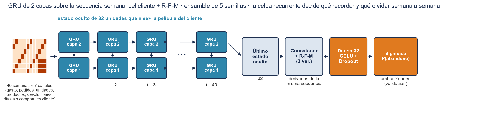
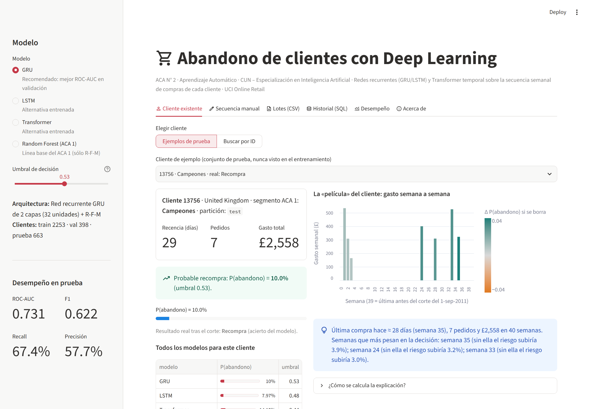
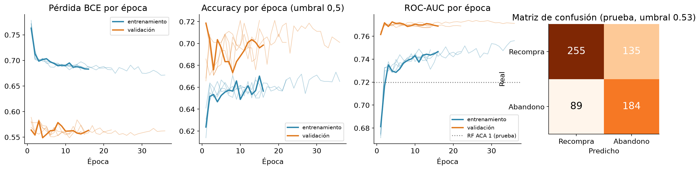
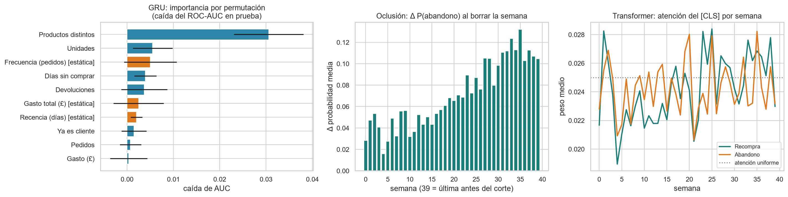

ACA N° 2 · Aprendizaje Automático · Especialización en Inteligencia Artificial · CUN – Escuela de Ingeniería · Docente: Hamilton Rivera Flor
Integrantes: Juan Guillermo Angel Jaramillo · Luis Bernardo Correa Restrepo · María Alejandra Manga Betancourt
Entrenar redes neuronales secuenciales (GRU, LSTM y Transformer temporal) que lean la historia semanal de compras de cada cliente para anticipar su abandono, compararlas con el Random Forest del ACA 1 en los mismos clientes y desplegar la mejor en una app Streamlit explicable.
¿Cómo aprovechar redes neuronales (CNN, RNN, Transformers) para extraer patrones complejos en datos de ventas y llevarlos a una interfaz interactiva?
En el ACA 1 el modelo veía una foto del cliente (recencia, frecuencia, gasto). Ahora la red ve la película: 40 semanas de compras, con su orden y su ritmo.

Lee las 40 semanas en orden; sus compuertas de actualización y reinicio deciden qué recordar del pasado. El último estado oculto (32) se concatena con R-F-M y pasa a una capa densa con salida sigmoide. 11.457 parámetros por red · ensamble de 5 semillas · AdamW. early stopping por AUC de validación.
| Modelo | Parám. | AUC val | ROC-AUC | F1 | Recall | Precisión | ΔAUC vs RF [IC 95 %] |
|---|---|---|---|---|---|---|---|
| Random Forest (ACA 1) | — | — | 0,720 | 0,654 | 0,821 | 0,544 | — |
| GRU | 11,5 k | 0,774 | 0,731 | 0,622 | 0,674 | 0,577 | +0,011 [−0,000; +0,022] |
| LSTM | 14,9 k | 0,771 | 0,730 | 0,640 | 0,740 | 0,564 | +0,010 [−0,002; +0,021] |
| Transformer | 19,9 k | 0,769 | 0,731 | 0,648 | 0,758 | 0,566 | +0,011 [−0,001; +0,024] |
IC 95 % (bootstrap, 2.000 remuestreos pareados) de GRU: ROC-AUC 0,693–0,766 · F1 0,575–0,666 · recall 0,618–0,728. ΔAUC frente al RF: +0,011 (p = 0,052). Umbrales elegidos en validación (regla de Youden del ACA 1). Al mismo punto de operación (recall ≥ 0,80 fijado en validación): GRU 218 abandonos detectados con 170 falsas alarmas; RF 224 con 188.



Lo más influyente para GRU es Productos distintos (caída de AUC 0,031), luego Unidades y Frecuencia (pedidos) [estática]. Borrar una compra de las 8 últimas semanas cambia P(abandono) en +0,113 frente a +0,041 en el primer trimestre. El [CLS] del Transformer dedica 20,3 % de su atención a esas 8 semanas (20 % si fuera uniforme).
Chen, D. (2015). Online Retail [Conjunto de datos]. UCI Machine Learning Repository. https://doi.org/10.24432/C5BW33
Cho, K., van Merriënboer, B., Gulcehre, C., Bahdanau, D., Bougares, F., Schwenk, H., & Bengio, Y. (2014). Learning phrase representations using RNN encoder–decoder for statistical machine translation. En Proceedings of EMNLP 2014 (pp. 1724–1734). https://doi.org/10.3115/v1/D14-1179
Hochreiter, S., & Schmidhuber, J. (1997). Long short-term memory. Neural Computation, 9(8), 1735–1780. https://doi.org/10.1162/neco.1997.9.8.1735
Iwana, B. K., & Uchida, S. (2021). An empirical survey of data augmentation for time series classification with neural networks. PLOS ONE, 16(7), e0254841. https://doi.org/10.1371/journal.pone.0254841
Vaswani, A., Shazeer, N., Parmar, N., Uszkoreit, J., Jones, L., Gomez, A. N., Kaiser, Ł., & Polosukhin, I. (2017). Attention is all you need. En Advances in Neural Information Processing Systems 30 (pp. 5998–6008). https://proceedings.neurips.cc/paper/2017/hash/3f5ee243547dee91fbd053c1c4a845aa-Abstract.html
App Streamlit: https://aca2-abandono-clientes-dl-juan-angel-tuqs2bahdtmtheu3bhrzfa.streamlit.app/
Video de sustentación: (enlace del video – por publicar)
Código (GitHub): https://github.com/leiderpq5521-creator/ACA2-Abandono-Clientes-DL-Juan-Angel